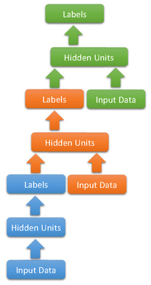
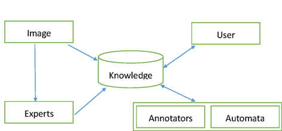

Lecture Notes from Three Recent Lectures
Recently, I was fortunate enough to attend three lectures delivered by Li Deng, Pietro Perona, and Fei-Fei Li, respectively. Here’s some summary from these lectures for record purpose.
Li Deng: Applying Deep Learning to Speech Recognition
- Speaker Information: Principle Researcher, Microsoft Research, Redmond
- One of the recent successful endeavors in this direction: Context-Dependent Pre-Trained Deep Neural Networks for Large-Vocabulary Speech Recognition. (I had similar ideas of context-dependent speech recognition when watching coursera video lectures: can we automatically generate subtitles for such technical material when a large number of professional terminologies are involved and apparently cannot be coped with using regular speech recognizers?)
- One of Dr. Deng’s first endeavors involving deep architectures in speech recognition used a dynamic Bayesian network with multiple layers of hidden units and carefully designed structure to learn gradually higher-level information from audio input.
- Dr. Deng’s recent endeavor, the Deep Convex Network counts the output label as part of the input to higher layers of hidden units, and uses a math formulation that allows efficient achievement of global optimum. Such model may have something to do with recurrent neural networks, as the output is “fed back” to the model in higher level of the model. [Paper link] The model looks like this
 - Convolutional neural networks (CNN) can be applied to spectrograms of audio data, and achieves impressive results. However note that one should never allow the CNN to pool over different frequency bands, as different they have very different meaning from the vertical axis of an image.
- Outlook Remarks
- Hidden Markov Models (HMMs) are fading out of the history in speech recognition. The recent years should see a major rise in segmental deep neural networks (like CNNs), and deep recurrent neural networks.
- We may need to develop better deep neural network training algorithms to better capture the statistics of speech data
- Another approach towards better models is scaling up the model to accommodate much more data (as Google did)
- From Q&A
- Recurrent neural networks are still not quite successful in audio applications, probably because they have too long memory (infinite, in fact), which may make the model difficult to be trained effectively.
- Large-scale asynchronous learning (async update of model parameters with respect to data) may have connection to do with the dropout technique, which does not use the full model to do computation (my comments: I think each datum just gets to update used weights, so this is quite similar to synchronized mini-batch learning, and may or may not have something to do with dropout)
Pietro Perona: Visipedia the Visual Encyclopedia
- Speaker Information: Allen E. Puckett Professor of Electrical Engineering and Computation and Neural Systems, California Institute of Technology (Caltech)
- The idea of Visipedia is quite similar to that of the Japanese animation Eden of the East (, Higashi no Eden), in which the characters developed a object recognition system as well as a collaborative knowledge base that allow users to upload images as queries to look up the knowledge base, e.g. what kind of mushroom is on the grass.
- Visipedia is designed as a human-machine collaboration system as below
 - Wanna spend some dollars and make use of crowd intelligence to expedite your work? Try Amazon Mechanical Turk.
- An interesting milestone of Visipedia: The Visipedia Field Guide to North American Birds in The ECCV Workshop on Computer Vision for the Web
- From Q&A
- Problems with reading existing field guides: 1) Field guides are usually organized in a decision tree manner, while recognition tasks usually involve uncertainty; 2) The information provided by an single image is too limited to determine many important factors, e.g. length, weight, and maybe to obscure to determine some important characteristics.
- Can we build a bird recognizer that first registers birds on a “template bird”, then extracts discriminative features automatically? Maybe no. Some discriminative features may not well-align on regular large body parts, and small ones are not easily distinguishable from noise.
- Relative position really matters (e.g. face recognition), but it’s still hard for unsupervised methods.
Fei-Fei Li: Large Scale Object Recognition — Past, Present, and Future
- Speaker Information: Associate Professor, Stanford University
- Computer vision is *bigger* than human vision: 1) computers have to deal with much more data sources than a human being; 2) computers should be able to distinguish much more object categories than a regular human being, which should be comparable or advantageous than the sum of all human knowledge, otherwise it won’t be helpful.
- Computer vision is *harder* than human vision: we want the computer vision system to have more visual knowledge than us, so that we can look up the computer and solve our problems at hand (e.g. “Is this mushroom edible?”)
- As the number of categories (larger-scale) and interclass similarity (finer-grain) grow, image classfication accuracy is becoming significantly worse.
- DARTS: Infallible Image Classifier: incorporates a tree of knowledge into the classifier, so that when it’s unsure of the exact leaf label, the classifier can choose a most confident (and informative) parent instead, therefore it never makes mistakes. For instance, if confused between a cat and a tiger, a mammal should work fine, or a living thing, or an object. In this case, however, the “mammal” label is the most informative (in the sense of entropy), thus it’s selected (and it’s correct!).
- Outlook of Large-scale Computer Vision
- Crowd Engineering: use human annotators to do the most difficult part, and let computers handle the rest (and learn from humans)
- Develop large-scale inference/optimization algorithms/implementations to solve larger problems
- Take one step further beyond classifications, and into understanding the object in the image
Older Post
None
blog comments powered by Disqus